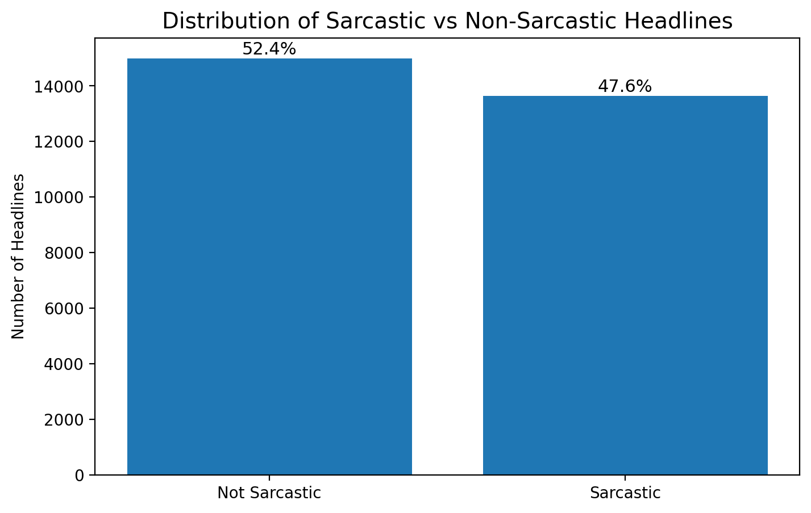
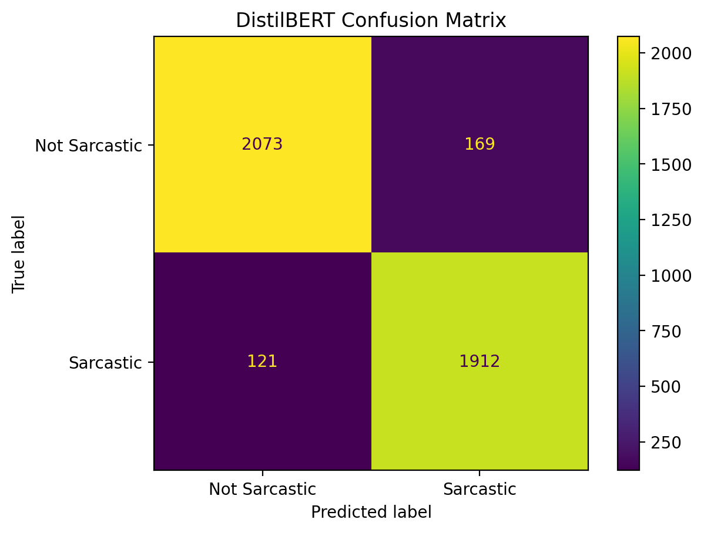

Logistic Regression
A linear baseline using TF-IDF features for individual words and adjacent word pairs.
A comparison of two TF-IDF baselines and fine-tuned DistilBERT on labeled news and satire headlines.
“Local man shocked to discover actions have consequences”
The wording resembles a news report. The punchline comes from treating an ordinary fact as a surprising discovery.
The project uses Rishabh Misra’s News Headlines Dataset for Sarcasm Detection. Each record contains a headline, a binary label, and a source article URL.
Preprocessing removes duplicate headlines and preserves wording and punctuation that can carry sarcasm cues. A stratified split allocates 70% to training and 15% each to validation and test.
View the dataset source
A linear baseline using TF-IDF features for individual words and adjacent word pairs.
A second linear classifier trained on the same TF-IDF representation and data split.
A pretrained transformer fine-tuned for binary classification. Its token representations depend on surrounding words.
The TF-IDF models performed similarly. DistilBERT reduced validation errors from 648 to 284 compared with Linear SVM.
| Model | Accuracy | F1 |
|---|---|---|
| Logistic Regression | 84.65% | 84.06% |
| Linear SVM | 84.84% | 84.25% |
| DistilBERT | 93.36% | 93.06% |
| Metric | Score |
|---|---|
| Accuracy | 92.52% |
| Precision | 90.96% |
| Recall | 93.56% |
| F1 | 92.24% |
| Loss | 0.2690 |

The test set comes from the same dataset as the training set. Informal checks found that conversational sarcasm and unfamiliar news styles can still be misclassified.
Unusual events and exaggerated wording can resemble satirical headlines.
Subtle absurdity or references that require background knowledge can be difficult to detect from a headline alone.
The model can learn writing patterns specific to the news and satire sources in the dataset. Its softmax confidence can be high on an incorrect prediction and has not been calibrated.
The repository includes notebooks, metrics, and a command-line predictor. Download the dataset separately and train and save the DistilBERT checkpoint before running local predictions.
Read the setup instructionsRun a local prediction
python src/predict.py "Local man shocked to discover actions have consequences"models/distilbert-sarcasm-final/.